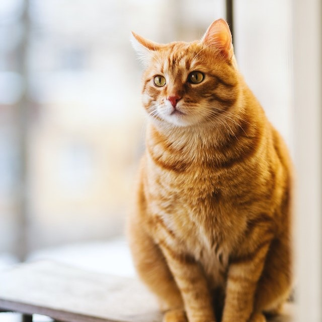

Kaz
Kaz is a 7 year old shorthair cat. He has been with us from the beginning and loves to have his belly rubbed. A rascal with the most energetic personality of our resident cats.

Bailey
Bailey is a 1 year old tuxedo cat. We think his fur pattern makes him look quite snazzy. Although he's dressed to impress, Bailey is quite shy, and is more likely to spend time with our regular customers. His favourite spot for you to scratch is his chin.

Milo
At 12 years old, Milo is our oldest cat. Sunbathing is his favourite activity, so you can usually find him in his windowseat. If you sit next to him, be prepared to hold a conversation, because his second favourite activity is meowing for attention.